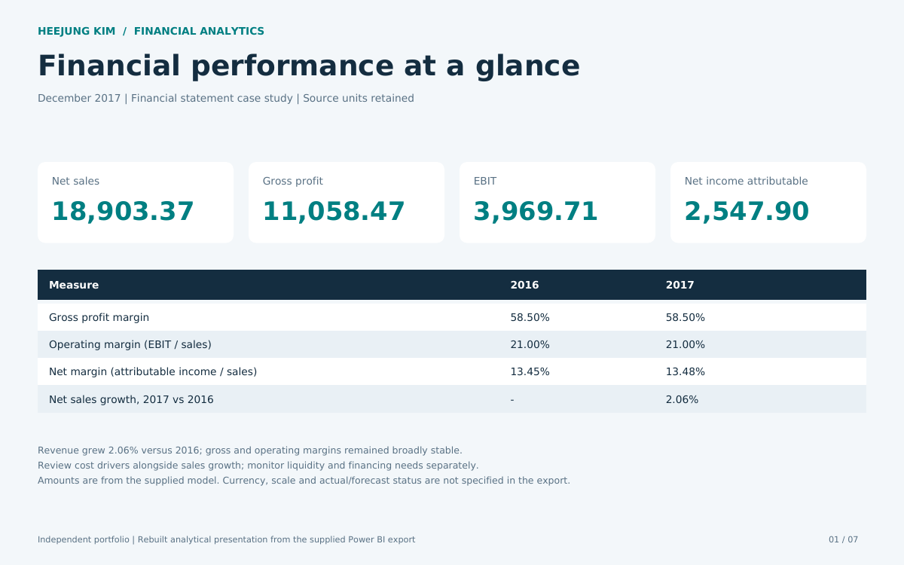
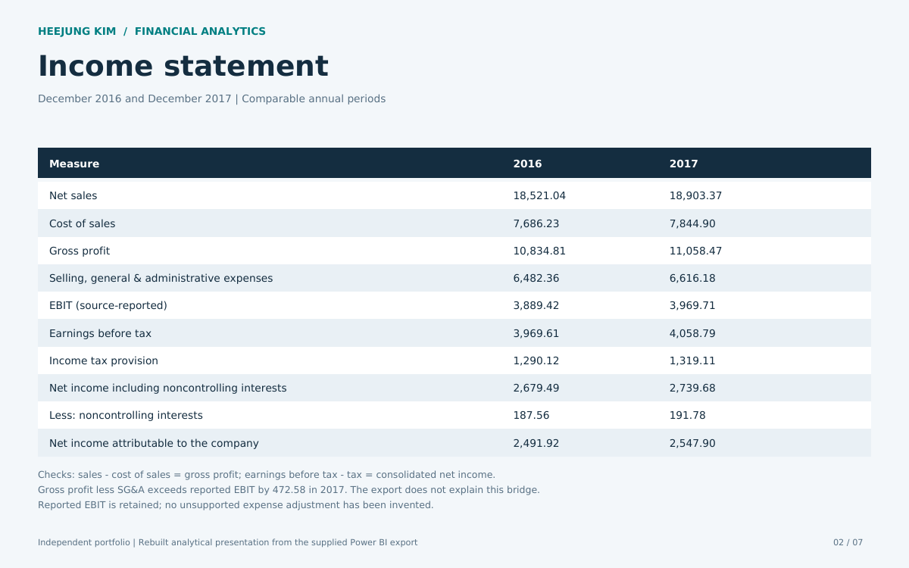
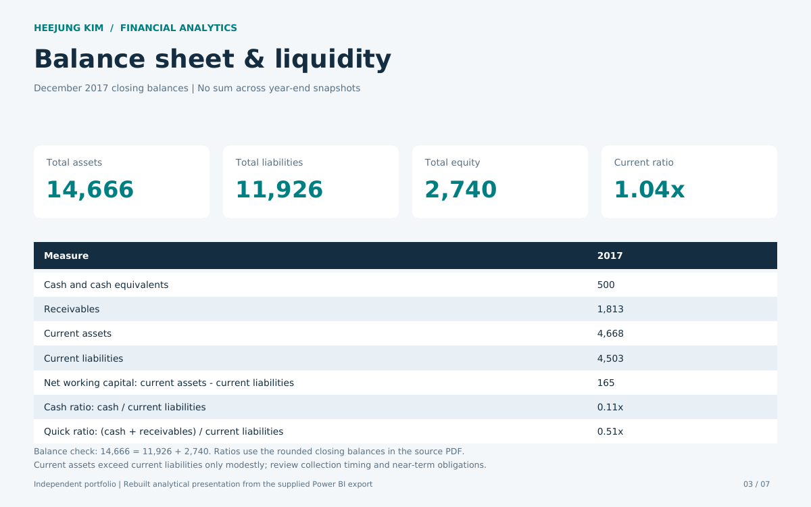
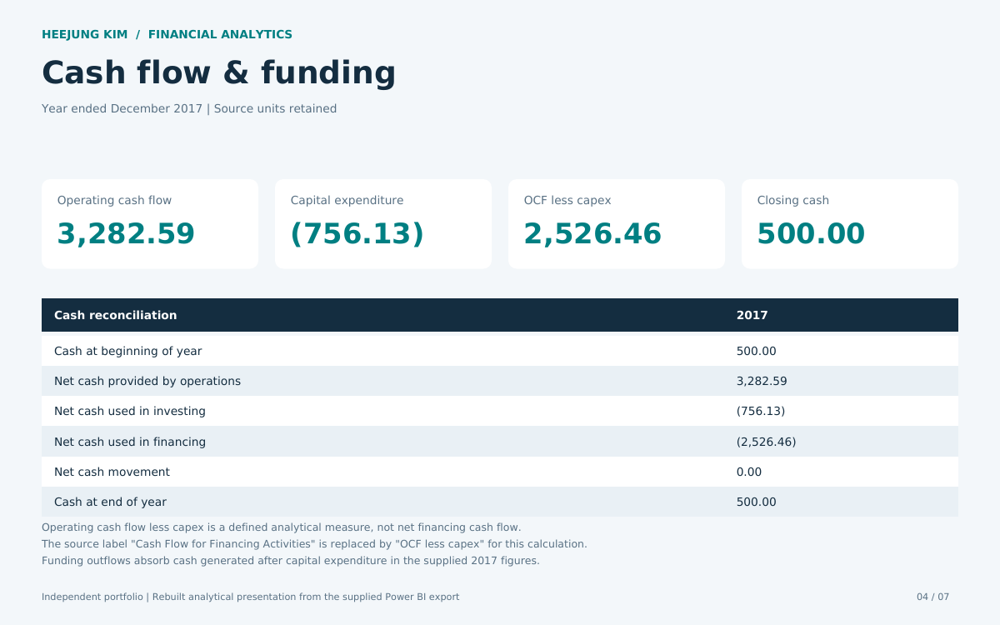
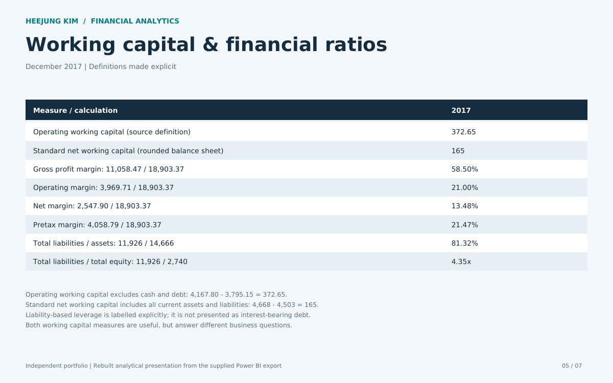
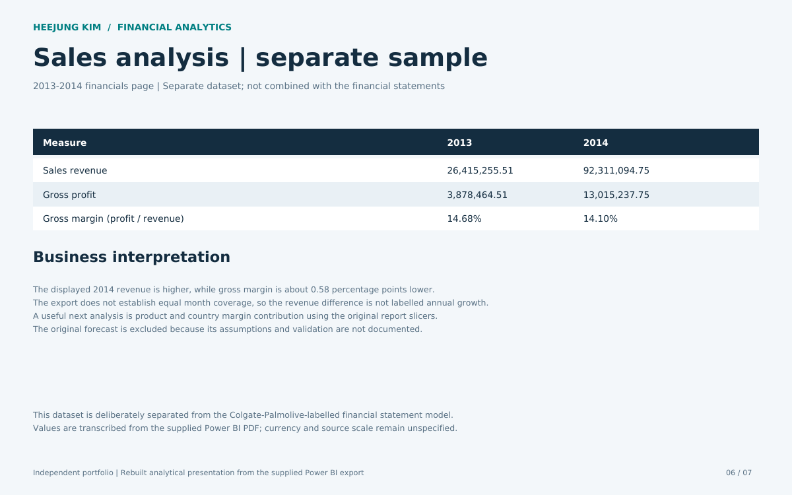
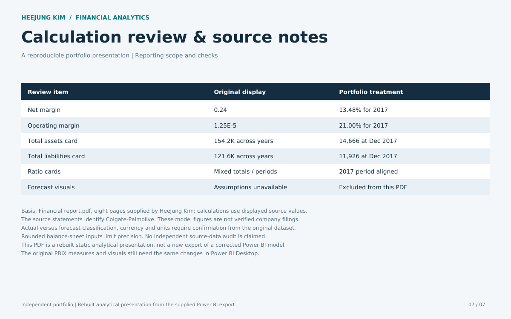
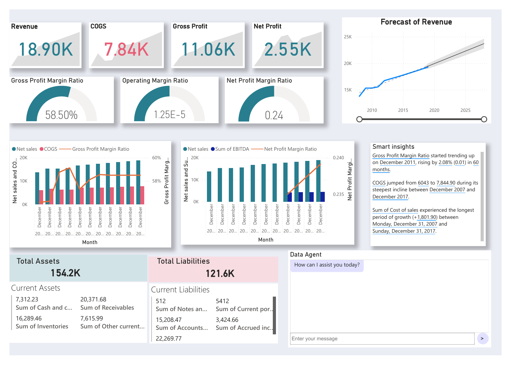
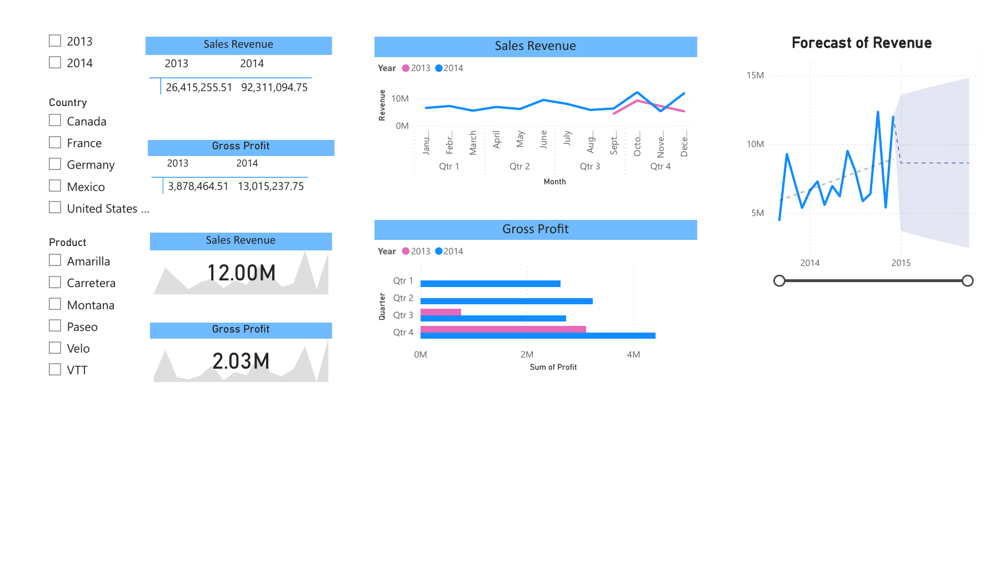
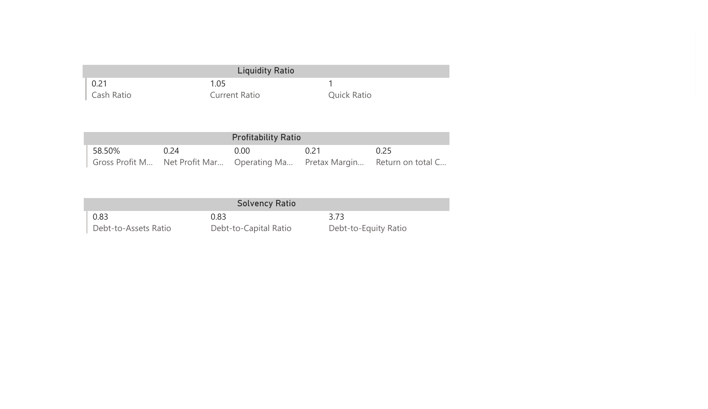

HEEJUNG KIM · FINANCIAL ANALYTICS
Financial Reporting & Analysis
My Power BI financial analysis project explores profitability, liquidity, cash flow and working capital.
Open the analytical report Original Power BI exportFinancial statements: December 2017. Sales sample: 2013–2014, shown separately. These are completed static analytical pages rebuilt from my Power BI export; the PBIX model still requires the corresponding updates. Source units and actual/forecast status remain unconfirmed.
Executive overview

Income statement

Balance sheet and liquidity

Cash flow and funding

Working capital and ratios

Separate sales sample

Calculation review

Project repository and calculation notes
Original Power BI dashboards
Screenshots from my Power BI report show the dashboard layouts and visuals. They retain the original calculations, including the margin and balance-sheet aggregation issues documented in the PDF. Refer to the analytical report for recalculated 2017 figures. Forecasts remain unvalidated.
Financial dashboard

Sales dashboard

Financial ratios dashboard
